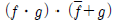
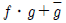
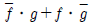
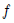
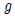
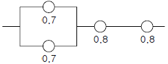
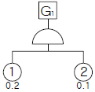
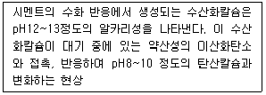

산업안전기사 (2006-09-10 기출문제)
1과목: 안전관리론
1. 합리적인 적성 배치시 고려되어야 할 기본사항이 아닌 것은?
- 인사관리의 기준 원칙에 준한다.
- 주관적인 요소를 적극 반영하여 배치한다.
- 직무평가를 통하여 자격수준을 정한다.
- 적성검사를 실시하여 개인의 능력을 파악한다.
(정답률: 92%)

2. 기계작업에 배치된 작업자가 반장의 지시를 받기 전에 정지된 선반을 운전시키면서 변속치차의 덮개를 벗겨내고 치차를 저속으로 운전하면서 급유하려고 할 때 오른손이 변속치차에 맞물려 손가락이 절단되었다. 이상의 재해 사례에서 기인물은 어느 것인가?
- 방호불충분
- 동력기계의 운전
- 변속치차
- 선반
(정답률: 74%)
3. 교육 실시 원칙상 한번에 하나 하나씩 나누어 확실하게 이해시켜야 하는 단계는?
- 도입 단계
- 제시 단계
- 적용 단계
- 확인 단계
(정답률: 66%)
4. 안전 심리에서 고려되는 가장 중요한 요소는 어느 것인가?
- 개성과 사고력
- 지식 정도
- 안전 규칙
- 신체적 조건과 기능
(정답률: 58%)
5. 불안전한 행동을 예방하기 위하여 수정해야 할 조건들중 시간의 소요가 짧은 것부터 길게 나타내는 순서로 올바른 것은?
- 집단행위 - 개인행위 - 태도 - 지식
- 개인행위 - 태도 - 지식 - 집단행위
- 태도 - 지식 - 집단행위 - 개인행위
- 지식 - 태도- 개인행위 - 집단행위
(정답률: 69%)
6. 버드(Bird)의 재해분포에 따르면 15건의 경상(물적 또는 인적 상해)사고가 발생하였다면 무상해, 무사고(위험순간)은 몇 건이 발생하는가?
- 300
- 450
- 600
- 900
(정답률: 61%)
7. 학습목적을 세분하여 구체적으로 결정한 것을 무엇이라 하는가?
- 주제
- 학습목표
- 학습정도
- 학습성과
(정답률: 55%)
8. 다음 재해누발자의 유형 중 상황성 누발자와 관련이 없는 것은?
- 작업이 어렵기 때문에
- 기능이 미숙하기 때문에
- 심신에 근심이 있기 때문에
- 기계설비에 결함이 있기 때문에
(정답률: 35%)
9. 안전태도교육의 기본 과정에 포함되지 않는 것은?
- 청취(Hearing)
- 훈계(Admonition)
- 평가(Evaluation)
- 이해(Understand)
(정답률: 85%)
10. 바이오리듬(생체리듬)에 대한 설명 중 잘못된 것은?
- 안정기(+)와 불안정기(-)의 교차점을 위험일이라 한다.
- 혈액의 수분, 염분량은 주간에 증가하고, 야간에 감소한다.
- 지성적 리듬은 “Ⅰ”로 표시하며 사고력과 관련이 있다.
- 감성적 리듬을 28일을 주기로 반복하며, 주의력, 예감등과 관련되어 있다.
(정답률: 76%)
11. 매슬로우(Maslow)의 욕구 5단계 중 안전욕구는 몇 단계인가?
- 1단계
- 2단계
- 3단계
- 4단계
(정답률: 80%)
12. 하인리히(H.W.Heinrich)의 재해발생 빈도율에 따라 중대재해가 4건 발생하였다면 경상해의 발생빈도는 어느 정도인가?
- 16
- 116
- 464
- 1,200
(정답률: 76%)
13. 브레인스토밍(Brainstorming) 미팅 기법의 4원칙에 해당되지 않는 것은?
- 수정 발언
- 자유 분방
- 요점 발언
- 비판 금지
(정답률: 82%)
14. 승강기의 자체검사 항목에 해당되지 않는 것은?
- 비상정지장치, 과부하방지장치, 그 밖에 방호장치의 이상 유무
- 후크 등 달기 기구의 손상 유무
- 가이드 레일의 상태
- 브레이크 및 제어장치의 이상 유무
(정답률: 52%)
15. 작업 표준의 구비조건에 해당되지 않는 것은?
- 다른 규정 등에 위배되지 않을 것
- 표현은 간단하게 나타낼 것
- 작업의 표준 설정은 실정에 적합할 것
- 이상시의 조치기준에 대해 정해둘 것
(정답률: 58%)
16. 안전표지의 종류 중 노란색 바탕에 검정색 삼각테로 이루어지며, 내용은 노란색 면적의 50% 이상을 차지하도록 검정색으로 표현하는 표지는?
- 금지표지
- 경고표지
- 지시표지
- 안내표지
(정답률: 78%)
17. Off J.T.(집체교육)의 특성에 해당되는 것은?
- 교육 효과가 업무에 신속히 반영된다.
- 타 직종 사람과의 지식, 경험의 교환이 가능하다.
- 현장의 관리 감독자가 강사가 되어 교육을 한다.
- 다수의 대상자를 일괄적으로 교육하기 어려운 점이 있다.
(정답률: 70%)
18. 하인리히의 재해코스트 평가방식에서 재해손실 금액 중 직접손비가 아닌 것은?
- 산재보상비용
- 입원비용
- 간호비용
- 생산손실비용
(정답률: 79%)
19. 1,000명이 일하고 있는 사업장에서 1주 48시간씩 52주를 일하고, 1년간에 80건의 재해가 발생하였다고 한다. 질병 등 다른 이유로 인하여 근로자는 총 노동시간의 3%를 결근했다면 이때의 재해 도수율(Frequency Rate)은?
- 25.46
- 33.04
- 47.81
- 56.91
(정답률: 60%)
20. 인간 행동의 함수 관계를 나타내는 레윈(K.Lewin)의 공식 B = f( PㆍE ) 에 대하여 가장 올바른 설명은?
- 인간의 행동은 자극과의 함수관계이다.
- B는 행동, f는 행동의 결과로서 환경 E의 산물이다.
- B는 목적, P는 개성, E는 자극을 뜻하여 행동은 어떤 자극에 의해 개성에 따라 나타내는 함수 관계이다.
- B는 행동, P는 자질, E는 환경을 나타내며, 행동은 자질과 환경의 함수관계이다.
(정답률: 83%)
2과목: 인간공학 및 시스템안전공학
21. 다음 색채 중 경쾌하고 가벼운 느낌에서 느리고 둔한 색의 순서로 바르게 배열한 것은?
- 백색 - 황색 - 녹색 - 자색
- 녹색 - 황색 - 적색 - 흑색
- 청색 - 자색 - 적색 - 흑색
- 황색 - 등색 - 녹색 - 청색
(정답률: 50%)
22. 근골격계 질환의 유해요인의 조사방법 중 인간공학적 평가 기법이 아닌 것은?
- OWAS
- NASA-TLX
- NLE
- RULA
(정답률: 59%)
23. 의자 설계시 고려하여야 할 원리에 해당되지 않는 것은?
- 자세고정을 줄인다.
- 조정이 용이해야 한다.
- 디스크가 받는 압력을 줄인다.
- 요추부위의 후만곡선을 유지한다.
(정답률: 67%)
24. 다양성 있는 체계로 역할을 할 수 있는 능력을 충분히 활용하는 인간과 기계 통합 체계는?
- 수동 체계
- 기계화 체계
- 반자동 체계
- 자동 체계
(정답률: 32%)
25. fㆍg를 부울변수라 할 때 다음 식을 간단히 한 것은?





(정답률: 40%)
26. 시스템안전 프로그램의 목표사항 중 보증할 필요가 없는 것은?
- 시스템의 목표 및 필요사항과 모순되지 않는 안전성의 시스템 설계에 의한 구체화
- 신재료 및 신제조, 시험, 기술의 채용 및 사용에 따른위험의 최소화
- 유사한 시스템 프로그램에 의하여 작성된 과거 안전성 데이터의 고찰 및 이용
- 시스템의 사고조사에 관한 구체적 기준
(정답률: 39%)
27. 다음 중 통제표시비의 설계시 고려사항이 아닌 것은?
- 계기의 크기
- 조작거리
- 조작시간
- 공차
(정답률: 30%)
28. 다음 중 동작 경제의 원칙이 아닌 것은?
- 동작 개선의 원칙
- 동작량 절약의 원칙
- 동작능력 활용의 원칙
- 동작 순환의 원칙
(정답률: 41%)
29. 다음 중 layout의 원칙으로 가장 올바른 것은?
- 운반작업을 수작업화 한다.
- 중간 중간에 중복 부분을 만든다.
- 인간이나 기계의 흐름을 라인화 한다.
- 사람이나 물건의 이동거리를 단축하기 위해 기계배치를 분산화 한다.
(정답률: 74%)
30. 인간의 실수 중 “어떤 일의 태만, 수행해야 할 작업 또는 단계를 생략한 형태의 실수”는 어느 형태의 오류로 분류 되는가?
- 부작위오류(omission error)
- 작위오류(commission error)
- 순서오류(sequence error)
- 시간오류(timing error)
(정답률: 64%)
31. 결함수의 OR 게이트이지만 2개 또는 2 이상의 입력이 동시에 존재하는 경우에는 출력이 생기지 않는 게이트는?
- OR게이트
- 조합 OR 게이트
- 배타적 OR 게이트
- 우선적 OR 게이트
(정답률: 64%)
32. C/D비(control-display ratio)가 크다는 것의 의미로 옳은 것은?
- 미세한 조종은 쉽지만 수행시간은 상대적으로 길다.
- 미세한 조종이 쉽고 수행시간도 상대적으로 짧다.
- 미세한 조종은 어렵지만 수행시간은 상대적으로 짧다.
- 미세한 조종이 어렵고 수행시간도 상대적으로 길다.
(정답률: 49%)
33. 안전성 평가는 6단계 과정을 거쳐 실시되는데 이에 해당 되지 않는 것은?
- 작업 조건의 측정
- 정성적 평가
- 안전대책
- 관계 자료의 정비검토
(정답률: 62%)
34. 시스템이 자동화가 될수록 증가하는 인간의 업무에 해당하지 않는 것은?
- 경계(vigilance)
- 감시(monitoring)
- 보전(maintenance)
- 감사(auditing)
(정답률: 48%)
35. 청각표시장치에서 경계 및 경보 신호를 선택ㆍ설계할때에 지침을 잘못 이해한 것은?
- 귀는 중음역에 가장 민감하므로 500~3,000Hz가 좋다.
- 장거리용 신호에는 500Hz 이하의 진동수를 사용한다.
- 칸막이를 통과하는 신호는 500Hz 이하의 진동수를 사용한다.
- 배경소음과 다른 진동수를 갖는 신호를 사용한다.
(정답률: 55%)
36. 다음 중 소음에 대한 대책과 관계가 먼 것은?
- 소음원을 통제
- 소음의 격리
- 소음의 분배
- 적절한 배치
(정답률: 60%)
37. 다음 시스템의 신뢰도는 얼마인가?

- 0.5824
- 0.6682
- 0.7855
- 0.8642
(정답률: 64%)
38. 다음 FRA기법의 발생확률 G1값은?

- 0.02
- 0.15
- 0.28
- 0.3
(정답률: 73%)
39. FT도 중에서 특정한 집합 중의 기본 사상들이 동시에 고장이 발생하면 틀림없이 정상 사상의 고장이 발생하는 조합을 무엇이라고 하는가?
- 컷셋
- 패스셋
- 최소 패스셋
- 억제 게이트
(정답률: 63%)
40. 어떤 부품의 고장확률 밀도함수는 평균 고장률()이 시간당 10⁻3 인 지수분포를 따르고 있다. 이 부품을 2,000시간 작동시켰을 때의 신뢰도는 얼마인가?
- 0.135
- 0.237
- 0.348
- 0.459
(정답률: 41%)
3과목: 기계위험방지기술
41. 연삭작업 중 숫돌차가 파괴되는 원인이 아닌 것은?
- 충격을 받았을 때
- 숫돌의 측면을 사용할 때
- 회전수가 규정 이상 초과 할 때
- 내외면의 플랜지 직경이 같을 때
(정답률: 71%)
42. 강자성체의 결함을 찾을 때 사용하는 비파괴 시험으로 표면 또는 표층(표면에서 수 mm 이내)에 결함이 있을 경우 누설 자속을 이용하여 육안으로 결함을 검출하는 시험법은?
- 와류탐상시험(ET)
- 자분탐상시험(MT)
- 초음파탐상시험(UT)
- 방사선투과시험(RT)
(정답률: 73%)
43. 산업안전보건법상의 승강기의 종류에 해당하지 않는 것은?
- 에스컬레이터
- 화물용승강기
- 인화공용승강기
- 리프트
(정답률: 56%)
44. 다음 중 셰이퍼(Shaper)의 안전장치가 아닌 것은?
- 방책
- 칩받이
- 칸막이
- 시건장치
(정답률: 59%)
45. 가스 집합 용접장치에 설치하는 저압용 수봉식 안전기의 유효주수는 얼마 이상을 유지하여야 하는가?
- 10mm
- 15mm
- 20mm
- 25mm
(정답률: 47%)
46. 손으로 조작하는 롤러기의 방호장치 중 로프식 급정지 장치로 설치거리로 가장 적당한 것은?
- 바닥에서 0.4 이상 ~ 0.6m 이하
- 바닥에서 0.8 이상 ~ 1.2m 이하
- 바닥에서 1.1m 이하
- 바닥에서 1.8m 이하
(정답률: 60%)
47. 수평거리 20m, 높이가 5m인 경우 지게차의 안정도는?
- 20%
- 25%
- 30%
- 35%
(정답률: 69%)
48. 다음 중 지게차의 안정도에 관한 설명으로 틀린 것은?
- 좌우 안정도와 전후 안정도가 있다.
- 주행과 하역작업의 안정도가 다르다.
- 지게차의 등판능력을 표시한다.
- 안정도 이하로 유지해야 한다.
(정답률: 52%)
49. 다음 중 수격작용과 관련이 없는 것은?
- 관내의 유동
- 밸브의 개폐
- 압력파
- 과열
(정답률: 65%)
50. 개구면에서 위험점까지의 거리가 60mm 위치에 풀리(pully)가 회전하고 있다. 가드(guard)의 개구부 간격으로 설정 할 수 있는 최대 값은?
- 9.0mm
- 12.0mm
- 15.0mm
- 18.0mm
(정답률: 47%)
51. 중량물을 취급시 적정 중량은 개개인이 체력 조건에 따라 다르다. 통상 장시간 작업의 경우 체중의 몇 % 한도 내에서 작업하는 것이 안전한가?
- 40
- 60
- 80
- 120
(정답률: 54%)
52. 리프트의 제작기준 등을 규정함에 있어 정격속도의 정의로 옳은 것은?
- 하물을 싣고 하강할 때의 속도
- 하물을 싣고 상승 할 때의 최고속도
- 하물을 싣고 상승 할 때의 평균속도
- 하물을 싣고 상승 할 때와 하강할 때의 평균속도
(정답률: 55%)
53. 선반의 방호장치 중 적당하지 않은 것은?
- 슬라이딩(sliding)
- 실드(shield)
- 척커버(chuk cover)
- 칩브레이커(chip breaker)
(정답률: 64%)
54. 크레인의 로프에 질량 100kg인 물체를 5m/sec2 의 가속도로 감아올릴 때 로프에 걸리는 하중은?
- 500N
- 1,480N
- 2,500N
- 4,900N
(정답률: 50%)
55. 다음은 기계ㆍ기구에 대한 방호조치이다. 이 중 연결이 잘못된 것은?
- 프레스기 - 감응식 방호장치
- 승강기 - 과부하 방지장치
- 연삭기 - 반발 예방장치
- 아세틸렌 용접기 및 가스 용접 장치 - 안전기
(정답률: 56%)
56. 압연기에서 재료가 자력으로 롤러에 물려드는 한계에 마찰각( α )과 접촉각(ρ )과의 관계는?
- α=ρ
- 2α=ρ
- 3α=ρ
- 4α=ρ
(정답률: 45%)
57. 기계가공에는 절삭에 의한 가공과 입자에 의한 가공이 있다. 입자에 의한 가공 중 미세입자를 분말상태로 사용 하여 가공하는 방법은?
- 연삭
- 래핑
- 호닝
- 슈퍼피니싱
(정답률: 39%)
58. 드릴머신으로 구멍을 뚫을 때 일감이 드릴과 함께 회전하기 가장 쉬운 시점은?
- 드릴작업을 시작할 때
- 구멍작업이 1/2 정도 되었을 때
- 구멍이 거의 다 뚫렸을 때
- 어느 구간이나 모두 동일하다.
(정답률: 48%)
59. 아세틸렌 용접시 역화가 일어날 때 가장 먼저 취해야할 행동은?
- 토치에 아세틸렌 밸브를 닫아야 한다.
- 아세틸렌 밸브를 즉시 잠그고 산소 밸브를 잠근다.
- 산소밸브를 즉시 잠그고 아세틸렌 밸브를 잠근다.
- 아세틸렌 사용압력을 1kg/cm2 이하로 즉시 낮춘다.
(정답률: 62%)
60. 안전율(안전계수)을 설명한 것으로 옳은 것은?
- 최대응력을 비례한도로 나눈 것
- 최대응력을 탄성한도로 나눈 것
- 최대응력을 파괴하중으로 나눈 것
- 최대응력을 허용응력으로 나눈 것
(정답률: 72%)
4과목: 전기위험방지기술
61. 인체에 접촉되는 전압의 최저 허용전압을 50V로 하고 인체 저항을 2,500Ω으로 할 때 지속 안전전류는 몇 mA인가?
- 20
- 40
- 50
- 62.5
(정답률: 45%)
62. 위험장소의 종류 중 “0” 종 장소에 일반적으로 가장 많이 사용되는 방폭구조는?
- 유입 방폭구조
- 내압 방폭구조
- 본질안전 방폭구조
- 안전증 방폭구조
(정답률: 56%)
63. 감전 사고에 의한 응급조치에서 재해자의 중요한 관찰 사항이 아닌 것은?
- 의식의 상태
- 맥박의 상태
- 호흡의 상태
- 유입점과 유출점의 상태
(정답률: 73%)
64. 피뢰침에 대한 설명 중 잘못된 것은?
- 피뢰침의 보호 범위는 일반 건물 20m일 때 45° 이다.
- 제1종 접지공사를 한다.
- 돌침은 지름이 12mm인 것을 사용한다.
- 접지극과 대지간의 접촉 저항은 10Ω 이하로 한다.
(정답률: 42%)
65. 이상전압 발생의 우려가 가장 적은 접지방식은?
- 비접지방식
- 직접접지방식
- 저항접지방식
- 소호리액터접지방식
(정답률: 40%)
66. 화재가 발생하였을 때 조사해야 하는 내용으로 가장 관계가 먼 것은?
- 발화원
- 착화물
- 출화의 경과
- 응고물
(정답률: 67%)
67. 다음 각 접지 공사별 접지 저항값이 바르게 연결된 것은?
- 제1종 접지공사 : 10Ω 이하
- 제2종 접지공사 : 10Ω 이하
- 제3종 접지공사 : 10Ω 이하
- 특별 제3종 접지공사 : 100Ω 이하
(정답률: 55%)
68. 대전이 큰 엷은 층상의 부도체를 박리할 때 또는 엷은 층상의 대전된 부도체의 뒷면에 밀접한 접지체가 있을 때 표면에 연한 수지상의 발광을 수반하여 발생하는 방전은?
- 불꽃방전
- 스트리머 방전
- 코로나 방전
- 연면 방전
(정답률: 57%)
69. 단로기를 사용하는 주된 목적은?
- 변성기의 개폐
- 이상전압의 차단
- 과부하 차단
- 무부하 선로의 개폐
(정답률: 61%)
70. 과부하를 차단하기 위하여 사용되는 저압용 퓨즈에 정격전류의 200%로 인가할 경우 해당 전류에 대한 용단시간이 잘못 연결된 것은?
- 30A 이하 : 2분
- 30A를 넘고 60A 이하 : 4분
- 60A를 넘고 100A 이하 : 6분
- 100A를 넘고 200A 이하 : 10분
(정답률: 40%)
71. 지중에 매설된 금속제의 수도관에 접지할 수 있는 경우의 접지 저항값은?
- 1Ω 이하
- 2Ω 이하
- 3Ω 이하
- 4Ω 이하
(정답률: 44%)
72. 전기의 안전장구에 속하지 않는 것은?
- 활선장구
- 검출용구
- 접지용구
- 전선접속용구
(정답률: 50%)
73. 정전기 발생에 대한 구체적인 방지대책의 설명으로 틀린 것은?
- 가스용기, 탱크 등의 도체부는 전부 접지한다.
- 작업장의 바닥은 도전율이 높은 재료를 선택한다.
- 화학섬유의 작업복을 착용한다.
- 대전 방지제 또는 제전기를 사용한다.
(정답률: 63%)
74. 피뢰기가 갖추어야 할 이상적인 성능 중 잘못된 것은?
- 제한전압이 낮아야 한다.
- 반복동작이 가능하여야 한다.
- 충격방전개시전압이 높아야 한다.
- 뇌전류의 방전능력이 크고 속류의 차단이 확실해야한다.
(정답률: 61%)
75. 코로나 방전이 발생할 경우 공기 중에 생성되는 것은?
- O2
- O3
- N2
- N3
(정답률: 62%)
76. 감전사고 시 전선이나 개폐가 터미널 등의 금속 분자가 고열로 용융됨으로서 피부 속으로 녹아 들어가는 것은?
- 피부의 광성변화
- 전문
- 표피박탈
- 전류반점
(정답률: 70%)
77. 두 가지 용제를 사용하고 있는 어느 도장 공장에서 폭발 사고가 발생하여 세 사람의 부상자를 발생시켰다. 부상자 동일 조건의 복장으로 정전용량이 120pF인 사람이 5m 도보 후에 표면 전위를 측정했더니 3,000V가 측정되었다. 사용한 혼합용제 가스의 최소 착화에너지는 얼마인가?
- 0.54mJ
- 0.54J
- 1.08mJ
- 1.08J
(정답률: 45%)
78. 압력방폭구조(p)의 종류가 아닌 것은?
- 통풍식
- 봉입식
- 밀봉식
- 접속식
(정답률: 37%)
79. 방폭형 기기에 폭발성 가스가 내부로 침입하여 내부에서 폭발이 발생하여도 이 압력에 견디도록 제작한 방폭구조는?
- 내압(d) 방폭구조
- 압력(p) 방폭구조
- 안전증(e) 방폭구조
- 본질안전(i) 방폭구조
(정답률: 70%)
80. 인체의 전기저항 R을 1,000Ω이라고 할 때 위험한계 에너지의 최저는 약 몇 J인가? (단, 통전 시간은 1초이다.)
- 17.225
- 27.225
- 37.225
- 47.225
(정답률: 53%)
5과목: 화학설비위험방지기술
81. 평활한 금속판 상에 한 방울의 니트로글리세린을 떨어뜨려 놓고 금속추로 타격을 행할 때 니트로글리세린 중에 아주 작은 기포가 존재한 경우, 기포가 존재하지 않을 때보다도 작은 충격에 의해 발화가 일어난다. 이 원인은 다음중 어느 것인가?
- 단열압축
- 정전기 발생
- 기포의 탈출
- 미분화 현상
(정답률: 43%)
82. 공업용 용기의 몸체 도색으로 가스명과 도색명의 연결이 옳은 것은?
- 산소 - 청색
- 질소 - 백색
- 수소 - 주황색
- 아세틸렌 - 회색
(정답률: 58%)
83. 다음 중 유독 위험성과 물질과의 관계가 잘못 된 것은?
- 자극성 - 암모니아, 이황산가스, 불화수소
- 질식성 - 일산화탄소, 황화수소
- 발암성 - 콜타르, 피치
- 중독성 - 포스겐
(정답률: 53%)
84. 연소 후에 재가 거의 없는 화재로 가연성 액체 등에 발생하는 화재는?
- A급
- B급
- C급
- D급
(정답률: 63%)
85. 다량의 황산이 가연물과 혼합되어 화재가 발생하였을 경우의 소화 작업으로 적절하지 못한 방법은?
- 회(灰)로 덮어 질식소화 한다.
- 건조분말로 질식소화 한다.
- 마른 모래로 덮어 질식소화 한다.
- 물을 뿌려 냉각소화 및 질식소화를 한다.
(정답률: 75%)
86. 분진폭발시 일어나는 특징을 가장 올바르게 설명한 것은?
- 연소속도나 폭발압력은 가스 폭발보다 크다.
- 불안전 연소로 인한 가스 중독의 위험은 적다
- 가스 폭발보다 연소시간은 짧고 발생에너지는 적다.
- 화염이 파급속도보다 압력의 파급속도가 크다.
(정답률: 61%)
87. 메탄 20%, 에탄 40%, 프로판 40%로 구성된 혼합 가스가 공기 중에서 연소할 때 이 혼합가스의 이론적 화학양론 조성은 약 몇% 인가? (단, 메탄의 Cst : 9.5%, 에탄의 Cst : 5.6%, 프로판의 Cst : 4.0% 임)
- 3.0%
- 4.0%
- 5.2%
- 9.5%
(정답률: 50%)
88. 배관설계 시 배관특성을 결정짓는 요소로 가장 관계가 먼 것은?
- 압력
- 온도
- 유량
- 전기전도도
(정답률: 67%)
89. 화학물질의 유해성에 관한 기술용어를 올바르게 설명한 것은?
- LC50 : 액체 화합물의 치사량 기호로서 실험동물 10마리 중 50%를 치사시키는 양
- MLD : 고체 화합물의 치사량 기호로서 실험동물 10마리 중 50%를 치사시키는 양
- TLV-C : 짧은 기간(15분 동안) 유해요인에 노출 되는 경우의 최고 허용농도
- TLV-TWA : 매일 8시간씩 일하는 근로자에게 노출되어도 영향을 주지 않는 최고 평균농도
(정답률: 39%)
90. 안전 간격의 설명으로 옳은 것은?
- 가스점화 시 내측의 폭발성 혼합가스까지 화염이 전달되는 한계의 틈이다.
- 가스점화 시 내측의 폭발성 혼합가스까지 화염이 전달되지 않는 한계의 틈이다.
- 가스점화 시 외측의 폭발성 혼합가스까지 화염이 전달되는 한계의 틈이다.
- 가스점화 시 외측의 폭발성 혼합가스까지 화염이 전달되지 않는 한계의 틈이다.
(정답률: 44%)
91. 가스폭발 한계의 측정에 있어서 화염의 전파방향이 어느 방향일 때 가장 넓은 값을 나타내는가?
- 상향
- 하향
- 수평
- 방향에 관계없다.
(정답률: 47%)
92. 일산화탄소의 폭발범위가 공기 중에서 11.5~72%라면 일산화탄소의 위험도는 얼마인가?
- 5.26
- 6.⑤
- 6.26
- 7.⑤
(정답률: 58%)
93. 파열판의 설명 중 잘못된 것은?
- 압력 방출속도가 빠르며 분출량이 많다.
- 높은 점성의 슬러리나 부식성 유체에 적용할 수 있다.
- 한번 부착한 후에는 교환할 필요가 없다.
- 설정 파열압력 이하에서 파열될 수 있다.
(정답률: 69%)
94. 폭발압력과 가연성가스의 농도와의 관계에 대한 설명으로 가장 옳은 것은?
- 가연성가스의 농도가 너무 희박하거나 진하여도 폭발압력은 높아진다.
- 폭발압력은 화학양론 농도보다 약간 높은 농도에서 최대 폭발압력이 된다.
- 최대 폭발압력의 크기는 공기와의 혼합기체에서보다 산소의 농도가 큰 혼합기체에서 더 낮아진다.
- 가연성가스의 농도와 폭발압력은 반비례 관계이다.
(정답률: 54%)
95. 폭발(연소) 범위에서 영향을 미치는 요소에 대한 설명으로 가장 거리가 먼 것은?
- 폭발(연소) 하한계는 온도 증가에 따라 감소한다.
- 폭발(연소) 상한계는 온도 증가에 따라 증가한다.
- 폭발(연소) 하한계는 압력 증가에 따라 감소한다.
- 폭발(연소) 상한계는 압력 증가에 따라 증가한다.
(정답률: 56%)
96. 유체의 역류를 방지하기 위해 설치하는 밸브는?
- 체크 밸브
- 블로밸브
- 대기밸브
- 코크밸브
(정답률: 71%)
97. 다음 중 금수성 물질이 아닌 것은?
- 나트륨
- 알킬알루미늄
- 칼륨
- 니트로글리세린
(정답률: 60%)
98. 혼합 위험의 특성이 아닌 것은?
- 가압하에서 발화지연이 짧다.
- 단독물의 경우는 혼합물의 경우보다 발화지연이 짧다.
- 주위온도보다 발화온도가 낮아지면 발화지연이 짧다.
- 햇빛 등 주변 빛의 영향으로 광분해반응이 수반될 수 있다.
(정답률: 46%)
99. 다음 중 물과 반응하여 아세틸렌을 발생시키는 물질은?
- Zn
- Mg
- Zn3P2
- CaC2
(정답률: 59%)
100. 자연발화의 방지법으로 잘못된 것은?
- 통풍을 잘 시킬 것
- 습도가 낮은 곳을 피할 것
- 저장실의 온도 상승을 피할 것
- 공기가 접촉되지 않도록 불활성액체 중에 저장할 것
(정답률: 52%)
6과목: 건설안전기술
101. 콘크리트 타설 시 내부진동기를 이용한 진동다지기를 할 때 사용상의 주의사항을 잘못된 것은?
- 2층 이상으로 타설되는 콘크리트에서 진동다지기를 할 때는 진동기를 하층의 콘크리트 속으로 찔러 넣어서는 안 된다.
- 진동기는 수직방향으로 넣고 간격은 약 50cm 이하로 한다.
- 진동기를 넣고 나서 뺄 때까지 시간은 보통 5~15초가 적당하다.
- 진동기는 콘크리트를 횡 방향으로 이동시킬 목적으로 사용해서는 안 된다.
(정답률: 32%)
102. 화약류 또는 위험물을 저장하거나 취급하는 시설물에 피뢰침을 설치하려고 한다. 이때 설치기준으로 올바르지 않은 것은?
- 피뢰침의 보호 각은 45도 이하로 할 것
- 피뢰침을 접지하기 위한 접지극과 대지간이 접지저항은 100옴(Ω) 이하일 것
- 피뢰도선은 단면적이 30제곱밀리미터 이상인 동선을 사용할 것
- 피뢰침은 인화성가스 등이 누설될 우려가 있는 시설물로부터 1.5미터 이상 떨어진 장소에 설치할 것
(정답률: 51%)
103. 콘크리트 타설 작업의 안전대책과 관련이 없는 것은?
- 작업 시작 전 거푸집 동바리 등의 변형 변위 및 지반침하 유무를 점검한다.
- 작업 중 감시자를 배치하여 거푸집 동바리 등의 변형, 변위 유무를 감시한다.
- 슬래브 콘크리트 타 설은 한쪽부터 순차적으로 타설하여 붕괴 재해를 방지해야 한다.
- 거푸집 동바리 등의 해체는 설계도서상 양생기간을 준수한다.
(정답률: 66%)
104. 철근콘크리트 구조물의 철근 비파괴 탐지법이 아닌 것은?
- X선법(방사선 투과법)
- 전자파 레이더법
- 반발 경도법
- 전자유도법
(정답률: 65%)
1⑤. 터널지보공을 설치한 때 수시로 점검하고 이상을 발견한 때에는 즉시 보강하거나 보수해야 할 사항이 아닌 것은?
- 부재의 긴압 정도
- 기둥 침하의 유무 및 상태
- 부재의 접속부 및 교차부 상태
- 부재의 강도
(정답률: 51%)
106. 폭우시 옹벽 배면의 배수시설이 취약하면 옹벽 저면을 통하여 침투수(seepage)의 수위가 올라간다. 이 침투수가 옹벽의 안정에 미치는 영향으로 틀린 것은?
- 옹벽 배면토의 단위수량 감소로 인한 수직 저항력 증가
- 옹벽 바닥면에서 양압력 증가
- 수평 저항력(수동토압)의 감소
- 포화 또는 부분 포화에 따른 뒷채움용 흙무게의 증가
(정답률: 49%)
107. 특별고압 활선작업에서 22kV 이하의 충전전로에 대하접근 한계 거리는?
- 45cm
- 60cm
- 90cm
- 110cm
(정답률: 51%)
108. 다음 가설전기시설 중 산업안전보건관리비 사용항목에 포함 되지 않는 것은?
- 접지시설
- 누전차단기
- 분전반
- 고압전선 보호시설
(정답률: 49%)
109. 아래 표의 설명은 경화한 콘크리트에서 발생할 수 있는 현상을 설명한 것이다. 이러한 현상을 무엇이라 하는가?

- 알칼리-골재반응
- 염해
- 동결융해
- 중성화
(정답률: 53%)
110. 가설통로의 구조에 대한 기준으로 틀린 것은?
- 경사는 45° 이하로 할 것
- 경사가 15°를 초과하는 때에는 미끄러지지 아니하는 구조로 할 것
- 추락위험이 있는 장소에는 안전난간을 설치할 것
- 수직갱에 가설된 통로의 길이가 15m 이상인 때에는 10m 이내마다 계단참을 설치할 것
(정답률: 60%)
111. 다음 중 부재 좌굴에 대한 억제 대책이 아닌 것은?
- 부재의 끝을 회전하지 않도록 구속한다.
- 부재의 중간에 사재를 연결한다.
- 부재에 작용하는 하중을 증대시킨다.
- 부재의 중간에 보를 연결한다.
(정답률: 64%)
112. 연약한 점토지반의 개량 공법으로 적당치 않는 것은?
- 샌드드레인(sand drain)공법
- 프리로딩(Pre loading)공법
- 페이퍼드레인(paper drain)공법
- 바이브로 플로테이션(vibro floation)공법
(정답률: 53%)
113. 양중기에 사용되는 와이어로프 중 근로자가 탑승하는 운반구를 지지하는 경우의 안전계수 기준으로 옳은 것은?
- 3 이상
- 5 이상
- 8 이상
- 10 이상
(정답률: 55%)
114. 와이어로프가 후크로부터 벗겨지는 것을 방지하기 위한 장치는?
- 해지장치
- 권과방지장치
- 과부하방지장치
- 섀클
(정답률: 65%)
115. 히빙(Heaving)현상 방지대책으로 틀린 것은?
- 흙막이 벽체의 근입깊이를 깊게 한다.
- 흙막이 벽체 배면의 지반을 개량하여 흙의 전단강도를 높인다.
- 부풀어 솟아오르는 바닥면의 토사를 제거한다.
- 소단을 두면서 굴착한다.
(정답률: 55%)
116. 강관을 이용한 단관비계 구조에 대한 설명으로 옳지 않은 것은?
- 비계기둥의 간격은 띠장 방향에서는 1.5m내지 1.8m로 한다.
- 비계기둥의 간격은 장선 방향에서는 1.5m 이하로 한다.
- 비계기둥간의 적재하중은 500kg을 초과하지 않도록 한다.
- 띠장 간격은 1.5m 이하로 설치하되 첫 번째 띠장은 지상으로부터 2m 이하의 위치에 설치한다.
(정답률: 59%)
117. 중량물 취급 작업 시 작업계획서에 반드시 포함시켜야 할 사항이 아닌 것은?
- 충돌위험을 예방할 수 있는 안전대책
- 낙하위험을 예방할 수 있는 안전대책
- 붕괴위험을 예방할 수 있는 안전대책
- 협착위험을 예방할 수 있는 안전대책
(정답률: 36%)
118. 추락방지용 방망 중 그물코의 크기가 5cm인 매듭방망 신품의 인장강도는 최소 몇 kg 이상이어야 하는가?
- 60
- 110
- 150
- 200
(정답률: 61%)
119. 법면붕괴에 대한 설명으로 적합하지 않은 것은?
- 성토법면의 붕괴는 성토직후에 발생되기 쉽다.
- 법면붕괴를 방지하려면 법면구배를 증가시켜야 한다.
- 지표수와 지하수는 법면붕괴의 원인이 된다.
- 법면의 붕괴는 토질과 깊은 관계가 있다.
(정답률: 66%)
120. 다음 중 항타기 또는 항발기를 조립하는 때에 점검하여야 할 기준 사항이 아닌 것은?
- 과부하방지장치의 이상 유무
- 권상장치의 브레이크 및 쐐기장치 기능의 이상 유무
- 본체 연결부의 풀림 또는 손상유무
- 버팀 방법 및 고정상태의 이상 유무
(정답률: 43%)